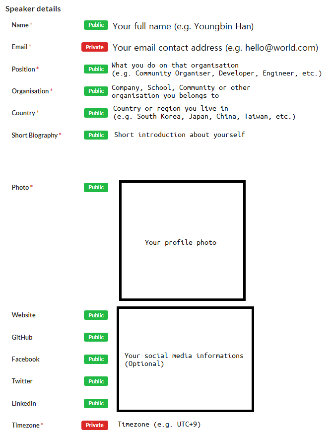

Berita
Periksa Kembali Pengajuan Proposal Anda Sebelum Batas Waktu
2021-07-11T15:34:54+09:00
- Youngbin Han
Panggilan untuk pembicara akan segera ditutup pada 14 Juli 23:59 UTC+9! Jika Anda telah mengirimkan proposal sesi apa pun, harap periksa kembali kiriman Anda dan perbarui jika diperlukan sebelum batas waktu tiba.
Info pembicara Anda
Silakan lihat gambar dan deskripsi di bawah dan periksa kiriman info pembicara Anda sekali lagi untuk melihat apakah ada yang kurang.
- Nama: Nama lengkap Anda (misalnya Youngbin Han)
- SUrel: Alamat kontak surel Anda. Anda akan menerima hasil peninjauan proposal dengan alamat surel yang Anda masukkan di sini. (mis. hello@world.com)
- Posisi: Apa yang Anda lakukan di organisasi tempat Anda berada (mis. Community Organizer, Developer, Engineer, Student, Founder, dll.)
- Organisasi: Perusahaan, Sekolah, Komunitas, atau jenis organisasi lain yang Anda ikuti
- Negara: Negara atau wilayah tempat Anda tinggal (mis. Korea Selatan, Jepang, Cina, Taiwan, dll.)
- Biografi Singkat: Pengenalan singkat tentang diri Anda
- Foto: Unggah foto profil Anda
- Situs web, GitHub, Facebook, Twitter, Linkedin: Masukkan informasi media sosial Anda (Opsional)
- Zona Waktu: Informasi Zona Waktu Anda. Jangan lupa berikan info ini! Digunakan untuk menjadwalkan sesi Anda! (mis. UTC+9)

Kiriman Sesi Anda
- Saat menulis abstrak sesi, Harap sertakan item berikut. Tulis dalam sekitar 3~10 kalimat.
- Jenis pengetahuan, pengalaman, atau cerita apa yang akan Anda bagikan
- Apa yang dapat dipelajari peserta dari sesi Anda
- Jika ada, latar belakang yang diperlukan atau direkomendasikan bagi peserta untuk memahami sesi Anda.
- Untuk lokakarya, Harap sertakan jadwal singkat dan persyaratan (mis. Koneksi jaringan yang stabil, akun Launchpad, instalasi perangkat lunak, dll.) untuk peserta.
- Untuk diskusi panel, harap sertakan informasi Moderator dan Panel
- Anda tidak perlu menyediakan salindia (slide) atau materi lain untuk pengajuan proposal sesi.
- Sesi dalam bahasa Korea, Jepang, Cina (Cina, Taiwan), Kanton (Hong Kong) atau Indonesia hanya tersedia jika Anda memilih Sesi Bicara yang telah direkam sebelumnya.
- Beri tahu kami bahwa sesi Anda sudah direkam sebelumnya atau sesi langsung
- Bicara/Bicara yang diperpanjang: Direkam sebelumnya atau langsung
- Bicara Kilat: Direkam sebelumnya
- Jenis sesi lainnya: Langsung
- Jika Anda menggunakan slot sesi Sponsor atau Mitra Komunitas, beri tahu kami di kolom komentar.

Topik seperti apa yang diperbolehkan?
- Setiap topik yang terkait dengan Ubuntu, Debian atau distribusi Linux lainnya dan teknologi sumber terbuka terkait.
- Jika tim konten tidak dapat menemukan relevansi dengan item di atas dari sesi Anda. Pengajuan Anda tidak dapat ditolak. Jika topik Anda terlalu umum, sertakan beberapa pengetahuan atau tip yang berlaku untuk Ubuntu.
- Contoh: Deploy Aplikasi Web Django -> Deploy Aplikasi Web Django di Ubuntu
- Jika tim konten tidak dapat menemukan relevansi dengan item di atas dari sesi Anda. Pengajuan Anda tidak dapat ditolak. Jika topik Anda terlalu umum, sertakan beberapa pengetahuan atau tip yang berlaku untuk Ubuntu.
- Kami dapat menolak proposal sesi yang mempromosikan solusi kepemilikan atau penjualan produk atau layanan perusahaan.
- Jika Anda mengalami kesulitan dalam memilih topik, dokumen ide sesi pada Wiki Ubuntu mungkin dapat membantu Anda.
- Jika Anda tidak yakin atau ingin memeriksa apakah topik sesi Anda baik-baik saja, jangan ragu untuk menghubungi tim konten kami: content@ubucon.asia

Youngbin Han
Penyelenggara, Ubucon Asia 2021/Penasehat, Komunitas Ubuntu Korea